coh1 coh2 coh3 coh4
Min. :1.000 Min. :1.000 Min. :1.000 Min. :1.000
1st Qu.:3.000 1st Qu.:3.000 1st Qu.:5.000 1st Qu.:5.000
Median :5.000 Median :4.000 Median :6.000 Median :6.000
Mean :4.288 Mean :4.094 Mean :5.489 Mean :5.338
3rd Qu.:6.000 3rd Qu.:5.000 3rd Qu.:6.000 3rd Qu.:6.000
Max. :7.000 Max. :7.000 Max. :7.000 Max. :7.000
coh5 coh6 coh7 coh8 coh9
Min. :1.000 Min. :1.000 Min. :1.000 Min. :1.00 Min. :1.00
1st Qu.:4.000 1st Qu.:2.000 1st Qu.:2.000 1st Qu.:2.00 1st Qu.:2.00
Median :5.000 Median :2.000 Median :2.000 Median :2.00 Median :3.00
Mean :4.993 Mean :2.424 Mean :2.856 Mean :2.91 Mean :3.54
3rd Qu.:6.000 3rd Qu.:3.000 3rd Qu.:4.000 3rd Qu.:4.00 3rd Qu.:5.00
Max. :7.000 Max. :7.000 Max. :7.000 Max. :7.00 Max. :7.00
coh10 coh11 coh12 coh13 coh14
Min. :1.00 Min. :1.000 Min. :1.000 Min. :1.000 Min. :1.000
1st Qu.:2.00 1st Qu.:2.000 1st Qu.:2.000 1st Qu.:5.000 1st Qu.:5.000
Median :2.00 Median :3.000 Median :3.000 Median :6.000 Median :6.000
Mean :2.68 Mean :3.205 Mean :3.277 Mean :5.317 Mean :5.543
3rd Qu.:3.00 3rd Qu.:4.000 3rd Qu.:5.000 3rd Qu.:6.000 3rd Qu.:6.000
Max. :7.00 Max. :7.000 Max. :7.000 Max. :7.000 Max. :7.000
coh15 coh16
Min. :1.000 Min. :1.00
1st Qu.:5.000 1st Qu.:5.00
Median :6.000 Median :6.00
Mean :5.626 Mean :5.46
3rd Qu.:6.000 3rd Qu.:6.00
Max. :7.000 Max. :7.00 Meaningful work measurement
1 Loading package libraries and formatting data
Rules for data formatting:
All variable names are lower case (e.g., “Progress” would become “progress”)
All spaces in variable names (if any) are turned into _ (e.g., “duration in seconds” would become “duration_ in_seconds”
Data exclusion rules:
The original dataset included N = 402
Participants after excluding those who failed any of the two attention checks (in other words, only retaining participants if attn1 == 2 & attn2 == 6): N = 390
Final participant numbers, after also excluding those who had any missing values on any of the key variables: N = 278
2 Exploratory Factor Analysis: Analytic Approach
Initially, I aimed to use polychoric correlations as opposed to Pearson’s r. Likert scale items are not ordinal but assume that the underlying variable is continuous, so Pearson’s r (assumes continuous variables) may be unrealistic. There are many benefits to using polychoric correlations with ordinal data. For instance, when using parallel analysis (Horn, 1965) to determine number of factors from ordinal items, polychoric correlations are recommended as they tend to outperform Pearson’s correlations when data is skewed (Garrido et al., 2013).
However, polychoric correlations are more likely to elicit convergence issues (e.g., Timmerman & Lorenzo-Seva, 2011). Indeed, when I tried including all variables simultaneously in one EFA (coherence, purpose, significance, meaning, self-realization and personal growth), the parallel analysis and efa did not converge.
As such, I took a two-step approach
Run separate EFA models for each proposed latent variable (e.g., work coherence) to check whether our items captured a single construct or several related constructs (e.g., different types of work coherence).
Notes:
I clumped self-realization and personal growth together as both measures were short and items seemed to be conceptually similar (self-realization as feeling that one can express one’s true/actual self at work; personal growth as feeling that one can develop one’s ideal self through work). By analysing them together at this step, I’d be able to identify and remove overlapping items.
I also clumped significance with organisational worth (socwor) items together for similar reasons as above: I saw the two as conceptually similar. It makes no real difference in terms of factor structure and retained items if i run them as separate models (one for socwor and another for significance items).
Run a confirmatory factor analysis using all the final factors obtained from the separate EFA models. This will allow me to check whether the obtained factors are indeed separate as opposed to overlapping, by looking at: (a) overall model fit–does a model with items loading onto their respective factors show an overall good fit, (b) cross-loading items–if several factors load onto the same item to a high amount (i.e., usually a standardized estimated loading of 30 or higher), this may be an indication that some items do not cleanly belong on their factor and may flag them for removal, (c) correlations between latent factors–very high correlations (.80 and above) may raise concerns that the factors are not capturing distinct constructs from one another.
EFA analysis approach:
I inspected the inter-item correlations across all items within their proposed scales (e.g., all purpose items) for instances where items were very highly correlated (>.90). In these instances, I would consider deleting one of the pair of highly correlated items based on conceptual considerations. Where several items were highly correlated, I aimed to remove the “worst offenders” (those items who showed high correlations with the greatest number of other items.
I used the “wls” estimation method as this seemed to work nicely with polychoric data and seems to match the “dwls” (the robust equivalent of “wls”) which is available in lavaan and recommended for use with polychoric data in CFA.
I used an oblique rotation across all models
Items were considered for removal if they had a primary factor loading lower than .32 or a secondary factor loading lower than .32. Some exceptions to these rules may include cases where removing an item would leave fewer than 3 indicators (items) per factor.
3 Step 0: Preliminary analyses
3.1 Coherence
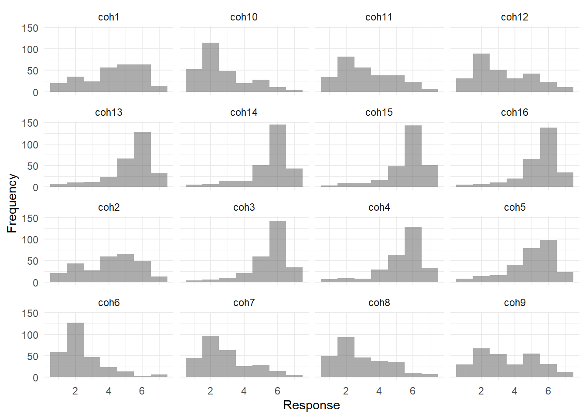
3.2 Purpose
purp1 purp2 purp3 purp4
Min. :1.000 Min. :1.000 Min. :1.000 Min. :1.000
1st Qu.:3.000 1st Qu.:4.000 1st Qu.:4.000 1st Qu.:4.000
Median :5.000 Median :5.000 Median :5.000 Median :5.000
Mean :4.604 Mean :4.777 Mean :4.752 Mean :4.914
3rd Qu.:6.000 3rd Qu.:6.000 3rd Qu.:6.000 3rd Qu.:6.000
Max. :7.000 Max. :7.000 Max. :7.000 Max. :7.000
purp5 purp6 purp7 purp8
Min. :1.000 Min. :1.000 Min. :1.000 Min. :1.000
1st Qu.:4.000 1st Qu.:5.000 1st Qu.:4.000 1st Qu.:5.000
Median :5.000 Median :6.000 Median :5.000 Median :6.000
Mean :4.878 Mean :5.421 Mean :5.054 Mean :5.245
3rd Qu.:6.000 3rd Qu.:6.000 3rd Qu.:6.000 3rd Qu.:6.000
Max. :7.000 Max. :7.000 Max. :7.000 Max. :7.000
purp9 purp10 purp11 purp12
Min. :1.000 Min. :1.000 Min. :1.000 Min. :1.000
1st Qu.:4.000 1st Qu.:4.000 1st Qu.:4.000 1st Qu.:4.000
Median :5.500 Median :5.000 Median :6.000 Median :6.000
Mean :4.914 Mean :4.946 Mean :4.932 Mean :5.072
3rd Qu.:6.000 3rd Qu.:6.000 3rd Qu.:6.000 3rd Qu.:6.000
Max. :7.000 Max. :7.000 Max. :7.000 Max. :7.000
purp13 purp14 purp15 purp16
Min. :1.000 Min. :1.000 Min. :1.000 Min. :1.000
1st Qu.:4.000 1st Qu.:4.250 1st Qu.:4.000 1st Qu.:4.000
Median :5.000 Median :5.000 Median :5.000 Median :5.000
Mean :4.766 Mean :5.094 Mean :4.942 Mean :4.741
3rd Qu.:6.000 3rd Qu.:6.000 3rd Qu.:6.000 3rd Qu.:6.000
Max. :7.000 Max. :7.000 Max. :7.000 Max. :7.000 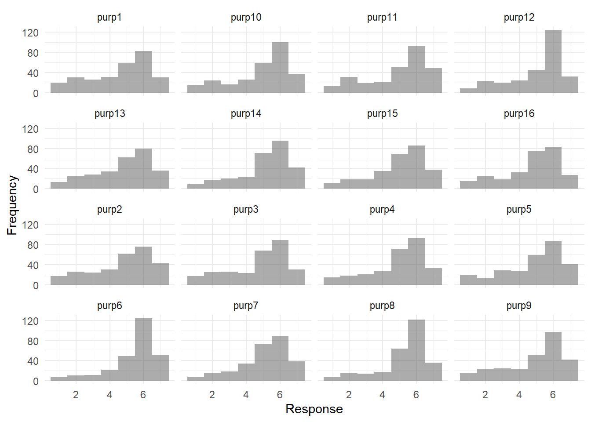
3.3 Significance
One of the items (sig5 My work really makes no difference to the world) was reverse-phrased and this is reflected in the distribution of scores for sig5
sig1 sig2 sig3 sig4
Min. :1.000 Min. :1.000 Min. :1.000 Min. :1.000
1st Qu.:3.000 1st Qu.:3.000 1st Qu.:4.000 1st Qu.:3.250
Median :5.000 Median :5.000 Median :5.000 Median :5.000
Mean :4.644 Mean :4.378 Mean :4.665 Mean :4.644
3rd Qu.:6.000 3rd Qu.:6.000 3rd Qu.:6.000 3rd Qu.:6.000
Max. :7.000 Max. :7.000 Max. :7.000 Max. :7.000
sig5 sig6 sig7 sig8
Min. :1.000 Min. :1.000 Min. :1.000 Min. :1.000
1st Qu.:2.000 1st Qu.:4.000 1st Qu.:2.000 1st Qu.:4.000
Median :3.000 Median :5.000 Median :4.000 Median :5.000
Mean :3.201 Mean :4.658 Mean :3.626 Mean :4.748
3rd Qu.:5.000 3rd Qu.:6.000 3rd Qu.:5.000 3rd Qu.:6.000
Max. :7.000 Max. :7.000 Max. :7.000 Max. :7.000
sig9 sig10 sig11 sig12
Min. :1.000 Min. :1.000 Min. :1.000 Min. :1.000
1st Qu.:2.000 1st Qu.:3.000 1st Qu.:3.000 1st Qu.:3.000
Median :4.000 Median :5.000 Median :5.000 Median :5.000
Mean :4.151 Mean :4.414 Mean :4.719 Mean :4.651
3rd Qu.:6.000 3rd Qu.:6.000 3rd Qu.:6.000 3rd Qu.:6.000
Max. :7.000 Max. :7.000 Max. :7.000 Max. :7.000
sig13 sig14 sig15 sig16 sig17
Min. :1.000 Min. :1.000 Min. :1.0 Min. :1.000 Min. :1.000
1st Qu.:3.000 1st Qu.:3.000 1st Qu.:3.0 1st Qu.:3.000 1st Qu.:3.000
Median :5.000 Median :5.000 Median :5.0 Median :5.000 Median :5.000
Mean :4.727 Mean :4.457 Mean :4.5 Mean :4.478 Mean :4.683
3rd Qu.:6.000 3rd Qu.:6.000 3rd Qu.:6.0 3rd Qu.:6.000 3rd Qu.:6.000
Max. :7.000 Max. :7.000 Max. :7.0 Max. :7.000 Max. :7.000
socwor1 socwor2 socwor3 socwor4
Min. :1.000 Min. :1.000 Min. :1.000 Min. :1.000
1st Qu.:4.000 1st Qu.:4.000 1st Qu.:4.000 1st Qu.:4.000
Median :6.000 Median :6.000 Median :5.000 Median :5.000
Mean :5.014 Mean :5.004 Mean :5.029 Mean :4.781
3rd Qu.:6.000 3rd Qu.:6.000 3rd Qu.:6.000 3rd Qu.:6.000
Max. :7.000 Max. :7.000 Max. :7.000 Max. :7.000
socwor5 socwor6
Min. :1.000 Min. :1.000
1st Qu.:4.000 1st Qu.:5.000
Median :5.000 Median :6.000
Mean :4.975 Mean :5.245
3rd Qu.:6.000 3rd Qu.:6.000
Max. :7.000 Max. :7.000 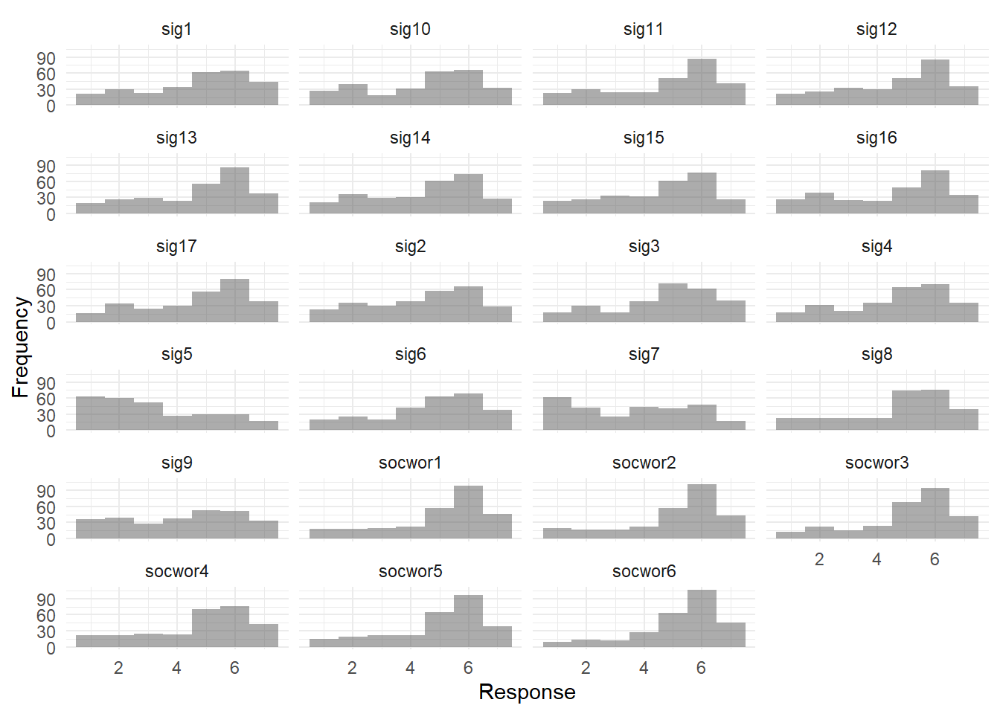
3.4 Global meaning in life
gmw1 gmw2 gmw3 gmw4
Min. :1.000 Min. :1.000 Min. :1.000 Min. :1.000
1st Qu.:3.000 1st Qu.:4.000 1st Qu.:3.000 1st Qu.:3.000
Median :5.000 Median :6.000 Median :6.000 Median :5.000
Mean :4.698 Mean :4.975 Mean :4.773 Mean :4.629
3rd Qu.:6.000 3rd Qu.:6.000 3rd Qu.:6.000 3rd Qu.:6.000
Max. :7.000 Max. :7.000 Max. :7.000 Max. :7.000
gmw5 gmw6 gmw7 gmw8
Min. :1.000 Min. :1.000 Min. :1.000 Min. :1.000
1st Qu.:3.000 1st Qu.:4.000 1st Qu.:3.000 1st Qu.:3.000
Median :5.000 Median :5.000 Median :5.000 Median :6.000
Mean :4.734 Mean :4.766 Mean :4.741 Mean :4.813
3rd Qu.:6.000 3rd Qu.:6.000 3rd Qu.:6.000 3rd Qu.:6.000
Max. :7.000 Max. :7.000 Max. :7.000 Max. :7.000 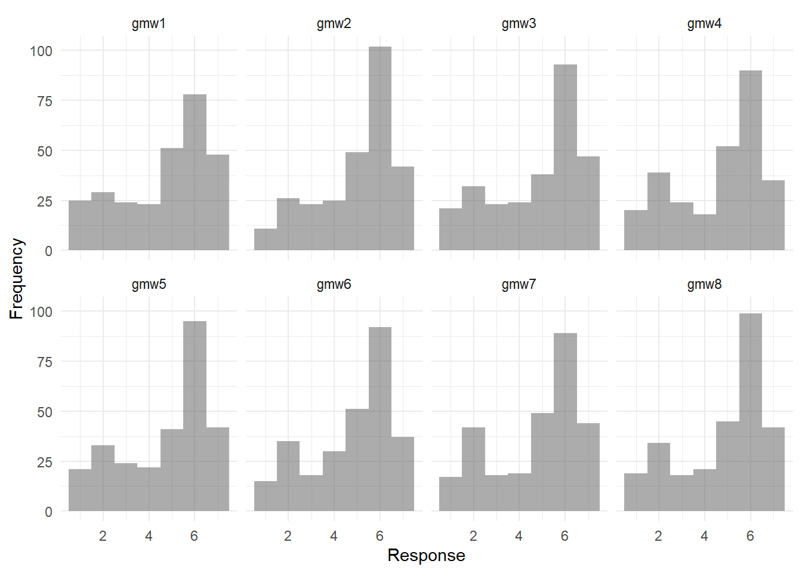
3.5 Self-realization and personal growth
sr1 sr2 sr3 sr4 sr5
Min. :1.000 Min. :1.000 Min. :1.000 Min. :1.00 Min. :1.000
1st Qu.:5.000 1st Qu.:3.000 1st Qu.:4.000 1st Qu.:2.00 1st Qu.:3.000
Median :6.000 Median :5.000 Median :5.000 Median :2.00 Median :5.000
Mean :5.122 Mean :4.371 Mean :4.622 Mean :2.91 Mean :4.665
3rd Qu.:6.000 3rd Qu.:6.000 3rd Qu.:6.000 3rd Qu.:4.00 3rd Qu.:6.000
Max. :7.000 Max. :7.000 Max. :7.000 Max. :7.00 Max. :7.000
sr6 sr7 sr8 pg1
Min. :1.000 Min. :1.000 Min. :1.000 Min. :1.000
1st Qu.:4.000 1st Qu.:4.000 1st Qu.:3.000 1st Qu.:4.000
Median :5.000 Median :5.000 Median :5.000 Median :5.000
Mean :4.662 Mean :4.647 Mean :4.367 Mean :4.705
3rd Qu.:6.000 3rd Qu.:6.000 3rd Qu.:6.000 3rd Qu.:6.000
Max. :7.000 Max. :7.000 Max. :7.000 Max. :7.000
pg2 pg3 pg4 pg5
Min. :1.000 Min. :1.000 Min. :1.000 Min. :1.000
1st Qu.:4.000 1st Qu.:5.000 1st Qu.:3.000 1st Qu.:4.000
Median :5.000 Median :6.000 Median :5.000 Median :5.000
Mean :4.752 Mean :5.176 Mean :4.507 Mean :4.665
3rd Qu.:6.000 3rd Qu.:6.000 3rd Qu.:6.000 3rd Qu.:6.000
Max. :7.000 Max. :7.000 Max. :7.000 Max. :7.000 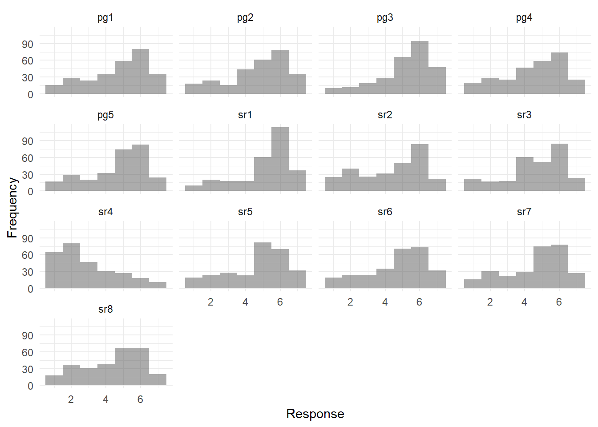
4 Step 1: Exploratory factor analyses
4.1 Coherence
The final factor structure suggested is shown below.
Factor 1: Comprehensible work
- coh3 I can make sense of the things that happen at my work.
- coh15 I can comprehend what my work is all about.
- coh4 Looking at my work as a whole, things make sense to me.
- coh16 I can easily make sense of my work.
- coh13 Most things happening at my work make sense.
- coh14 By and large, I am able to understand what happens at my work.
- coh10 I often feel that I am in an unfamiliar situation and I don’t know what to do at work.
- coh11 I often have very mixed-up feelings and ideas at work.
Factor 2: Self-coherence through work
- coh1 My work helps me better understand myself.
- coh2 My work helps me make sense of the world around me.
- coh5 I can see a connection between past, present, and future events at my work.
Factor 3: Chaotic work
- coh9 My work is unpredictable.
- coh7 My work is unstructured.
- coh8 My work is uncontrollable.
4.1.1 Pre-analysis
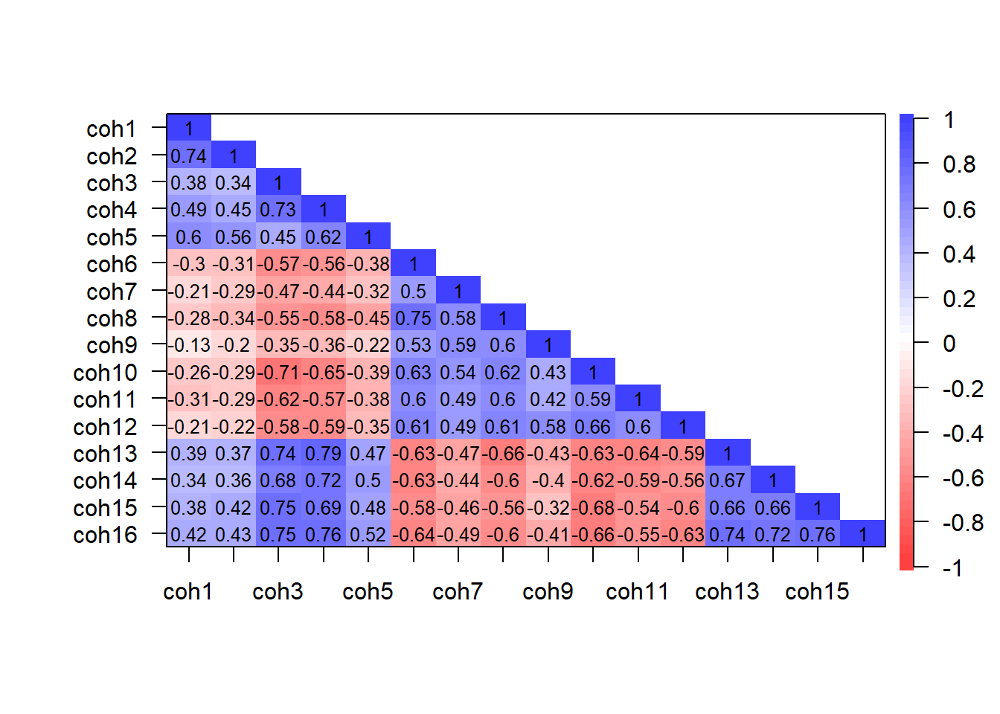
$chisq
[1] 3396.823
$p.value
[1] 0
$df
[1] 120Kaiser-Meyer-Olkin factor adequacy
Call: psych::KMO(r = coh_rho)
Overall MSA = 0.94
MSA for each item =
coh1 coh2 coh3 coh4 coh5 coh6 coh7 coh8 coh9 coh10 coh11 coh12 coh13
0.82 0.84 0.95 0.94 0.93 0.95 0.93 0.94 0.88 0.96 0.96 0.94 0.95
coh14 coh15 coh16
0.97 0.96 0.96 
Parallel analysis suggests that the number of factors = 3 and the number of components = NA 4.1.2 Factor analysis
Loading required namespace: GPArotationFactor Analysis using method = wls
Call: psych::fa(r = coh_selection, nfactors = 3, scores = "tenBerge",
fm = "wls", cor = "poly")
Standardized loadings (pattern matrix) based upon correlation matrix
WLS1 WLS3 WLS2 h2 u2 com
coh1 0.03 0.05 0.87 0.77 0.23 1.0
coh2 -0.05 -0.10 0.84 0.71 0.29 1.0
coh3 0.95 0.09 -0.05 0.76 0.24 1.0
coh4 0.83 0.07 0.17 0.78 0.22 1.1
coh5 0.30 -0.01 0.54 0.54 0.46 1.6
coh6 -0.41 0.46 -0.03 0.64 0.36 2.0
coh7 -0.13 0.59 -0.08 0.51 0.49 1.1
coh8 -0.29 0.60 -0.09 0.71 0.29 1.5
coh9 0.10 0.84 -0.04 0.63 0.37 1.0
coh10 -0.71 0.21 0.09 0.66 0.34 1.2
coh11 -0.52 0.28 -0.01 0.54 0.46 1.6
coh12 -0.50 0.42 0.10 0.62 0.38 2.0
coh13 0.77 -0.09 0.04 0.72 0.28 1.0
coh14 0.74 -0.08 0.03 0.65 0.35 1.0
coh15 0.84 0.04 0.04 0.69 0.31 1.0
coh16 0.81 -0.03 0.08 0.76 0.24 1.0
WLS1 WLS3 WLS2
SS loadings 6.15 2.52 2.02
Proportion Var 0.38 0.16 0.13
Cumulative Var 0.38 0.54 0.67
Proportion Explained 0.58 0.24 0.19
Cumulative Proportion 0.58 0.81 1.00
With factor correlations of
WLS1 WLS3 WLS2
WLS1 1.00 -0.62 0.50
WLS3 -0.62 1.00 -0.22
WLS2 0.50 -0.22 1.00
Mean item complexity = 1.3
Test of the hypothesis that 3 factors are sufficient.
The degrees of freedom for the null model are 120 and the objective function was 12.54 with Chi Square of 3396.82
The degrees of freedom for the model are 75 and the objective function was 0.72
The root mean square of the residuals (RMSR) is 0.02
The df corrected root mean square of the residuals is 0.03
The harmonic number of observations is 278 with the empirical chi square 41.45 with prob < 1
The total number of observations was 278 with Likelihood Chi Square = 194.79 with prob < 1.3e-12
Tucker Lewis Index of factoring reliability = 0.941
RMSEA index = 0.076 and the 90 % confidence intervals are 0.063 0.089
BIC = -227.28
Fit based upon off diagonal values = 1
Measures of factor score adequacy
WLS1 WLS3 WLS2
Correlation of (regression) scores with factors 0.98 0.93 0.94
Multiple R square of scores with factors 0.95 0.86 0.87
Minimum correlation of possible factor scores 0.91 0.71 0.75# Rotated loadings from Factor Analysis (oblimin-rotation)
Variable | WLS1 | WLS3 | WLS2 | Complexity | Uniqueness
--------------------------------------------------------
coh3 | 0.95 | | | 1.02 | 0.24
coh15 | 0.84 | | | 1.01 | 0.31
coh4 | 0.83 | | | 1.10 | 0.22
coh16 | 0.81 | | | 1.02 | 0.24
coh13 | 0.77 | | | 1.03 | 0.28
coh14 | 0.74 | | | 1.03 | 0.35
coh10 | -0.71 | 0.21 | | 1.21 | 0.34
coh11 | -0.52 | 0.28 | | 1.56 | 0.46
coh12 | -0.50 | 0.42 | | 2.03 | 0.38
coh9 | | 0.84 | | 1.03 | 0.37
coh8 | -0.29 | 0.60 | | 1.50 | 0.29
coh7 | | 0.59 | | 1.14 | 0.49
coh6 | -0.41 | 0.46 | | 1.99 | 0.36
coh1 | | | 0.87 | 1.01 | 0.23
coh2 | | | 0.84 | 1.04 | 0.29
coh5 | 0.30 | | 0.54 | 1.56 | 0.46
The 3 latent factors (oblimin rotation) accounted for 66.78% of the total variance of the original data (WLS1 = 38.42%, WLS3 = 15.73%, WLS2 = 12.63%).In this model, I removed coh12 and coh6 based on the exclusion rules outlined under Exploratory Factor Analysis: Analytic Approach
Factor Analysis using method = wls
Call: psych::fa(r = coh_selection_short, nfactors = 3, scores = "tenBerge",
fm = "wls", cor = "poly")
Standardized loadings (pattern matrix) based upon correlation matrix
WLS1 WLS2 WLS3 h2 u2 com
coh1 0.02 0.89 0.05 0.79 0.21 1.0
coh2 -0.05 0.83 -0.10 0.70 0.30 1.0
coh3 0.95 -0.07 0.07 0.77 0.23 1.0
coh4 0.83 0.16 0.06 0.78 0.22 1.1
coh5 0.30 0.52 -0.02 0.54 0.46 1.6
coh7 -0.13 -0.05 0.65 0.56 0.44 1.1
coh8 -0.34 -0.06 0.55 0.68 0.32 1.7
coh9 0.06 -0.02 0.82 0.62 0.38 1.0
coh10 -0.72 0.11 0.19 0.65 0.35 1.2
coh11 -0.54 0.00 0.26 0.52 0.48 1.4
coh13 0.79 0.02 -0.09 0.72 0.28 1.0
coh14 0.76 0.01 -0.07 0.65 0.35 1.0
coh15 0.84 0.03 0.05 0.69 0.31 1.0
coh16 0.82 0.07 -0.02 0.75 0.25 1.0
WLS1 WLS2 WLS3
SS loadings 5.61 1.96 1.85
Proportion Var 0.40 0.14 0.13
Cumulative Var 0.40 0.54 0.67
Proportion Explained 0.60 0.21 0.20
Cumulative Proportion 0.60 0.80 1.00
With factor correlations of
WLS1 WLS2 WLS3
WLS1 1.00 0.52 -0.61
WLS2 0.52 1.00 -0.23
WLS3 -0.61 -0.23 1.00
Mean item complexity = 1.2
Test of the hypothesis that 3 factors are sufficient.
The degrees of freedom for the null model are 91 and the objective function was 10.49 with Chi Square of 2848.13
The degrees of freedom for the model are 52 and the objective function was 0.46
The root mean square of the residuals (RMSR) is 0.02
The df corrected root mean square of the residuals is 0.03
The harmonic number of observations is 278 with the empirical chi square 25.42 with prob < 1
The total number of observations was 278 with Likelihood Chi Square = 123.88 with prob < 8.4e-08
Tucker Lewis Index of factoring reliability = 0.954
RMSEA index = 0.07 and the 90 % confidence intervals are 0.055 0.087
BIC = -168.76
Fit based upon off diagonal values = 1
Measures of factor score adequacy
WLS1 WLS2 WLS3
Correlation of (regression) scores with factors 0.98 0.94 0.91
Multiple R square of scores with factors 0.95 0.88 0.82
Minimum correlation of possible factor scores 0.90 0.76 0.64# Rotated loadings from Factor Analysis (oblimin-rotation)
Variable | WLS1 | WLS2 | WLS3 | Complexity | Uniqueness
--------------------------------------------------------
coh3 | 0.95 | | | 1.02 | 0.23
coh15 | 0.84 | | | 1.01 | 0.31
coh4 | 0.83 | | | 1.08 | 0.22
coh16 | 0.82 | | | 1.01 | 0.25
coh13 | 0.79 | | | 1.03 | 0.28
coh14 | 0.76 | | | 1.02 | 0.35
coh10 | -0.72 | | | 1.19 | 0.35
coh11 | -0.54 | | 0.26 | 1.44 | 0.48
coh1 | | 0.89 | | 1.01 | 0.21
coh2 | | 0.83 | | 1.04 | 0.30
coh5 | 0.30 | 0.52 | | 1.59 | 0.46
coh9 | | | 0.82 | 1.01 | 0.38
coh7 | | | 0.65 | 1.10 | 0.44
coh8 | -0.34 | | 0.55 | 1.71 | 0.32
The 3 latent factors (oblimin rotation) accounted for 67.30% of the total variance of the original data (WLS1 = 40.07%, WLS2 = 14.04%, WLS3 = 13.19%).Factor Analysis using method = wls
Call: psych::fa(r = coh_selection, nfactors = 2, scores = "tenBerge",
fm = "wls", cor = "poly")
Standardized loadings (pattern matrix) based upon correlation matrix
WLS1 WLS2 h2 u2 com
coh1 0.02 0.85 0.72 0.28 1.0
coh2 -0.06 0.75 0.60 0.40 1.0
coh3 -0.75 0.14 0.67 0.33 1.1
coh4 -0.66 0.32 0.73 0.27 1.4
coh5 -0.26 0.59 0.56 0.44 1.4
coh6 0.82 0.06 0.62 0.38 1.0
coh7 0.69 0.09 0.42 0.58 1.0
coh8 0.83 0.06 0.64 0.36 1.0
coh9 0.70 0.23 0.39 0.61 1.2
coh10 0.83 0.06 0.66 0.34 1.0
coh11 0.74 0.01 0.54 0.46 1.0
coh12 0.85 0.17 0.62 0.38 1.1
coh13 -0.77 0.13 0.70 0.30 1.1
coh14 -0.73 0.13 0.63 0.37 1.1
coh15 -0.70 0.19 0.65 0.35 1.1
coh16 -0.74 0.20 0.72 0.28 1.1
WLS1 WLS2
SS loadings 7.71 2.17
Proportion Var 0.48 0.14
Cumulative Var 0.48 0.62
Proportion Explained 0.78 0.22
Cumulative Proportion 0.78 1.00
With factor correlations of
WLS1 WLS2
WLS1 1.00 -0.47
WLS2 -0.47 1.00
Mean item complexity = 1.1
Test of the hypothesis that 2 factors are sufficient.
The degrees of freedom for the null model are 120 and the objective function was 12.54 with Chi Square of 3396.82
The degrees of freedom for the model are 89 and the objective function was 1.46
The root mean square of the residuals (RMSR) is 0.05
The df corrected root mean square of the residuals is 0.06
The harmonic number of observations is 278 with the empirical chi square 152.22 with prob < 3.5e-05
The total number of observations was 278 with Likelihood Chi Square = 394.59 with prob < 4.6e-40
Tucker Lewis Index of factoring reliability = 0.874
RMSEA index = 0.111 and the 90 % confidence intervals are 0.1 0.123
BIC = -106.27
Fit based upon off diagonal values = 0.99
Measures of factor score adequacy
WLS1 WLS2
Correlation of (regression) scores with factors 0.98 0.93
Multiple R square of scores with factors 0.95 0.86
Minimum correlation of possible factor scores 0.91 0.72# Rotated loadings from Factor Analysis (oblimin-rotation)
Variable | WLS1 | WLS2 | Complexity | Uniqueness
-------------------------------------------------
coh12 | 0.85 | | 1.07 | 0.38
coh10 | 0.83 | | 1.01 | 0.34
coh8 | 0.83 | | 1.01 | 0.36
coh6 | 0.82 | | 1.01 | 0.38
coh13 | -0.77 | | 1.06 | 0.30
coh3 | -0.75 | | 1.07 | 0.33
coh11 | 0.74 | | 1.00 | 0.46
coh16 | -0.74 | | 1.14 | 0.28
coh14 | -0.73 | | 1.06 | 0.37
coh9 | 0.70 | 0.23 | 1.21 | 0.61
coh15 | -0.70 | | 1.14 | 0.35
coh7 | 0.69 | | 1.04 | 0.58
coh4 | -0.66 | 0.32 | 1.45 | 0.27
coh1 | | 0.85 | 1.00 | 0.28
coh2 | | 0.75 | 1.01 | 0.40
coh5 | -0.26 | 0.59 | 1.37 | 0.44
The 2 latent factors (oblimin rotation) accounted for 61.74% of the total variance of the original data (WLS1 = 48.19%, WLS2 = 13.55%).Factor Analysis using method = wls
Call: psych::fa(r = coh_selection, nfactors = 1, fm = "wls", cor = "poly")
Standardized loadings (pattern matrix) based upon correlation matrix
WLS1 h2 u2 com
coh1 0.48 0.23 0.77 1
coh2 0.49 0.24 0.76 1
coh3 0.82 0.68 0.32 1
coh4 0.85 0.72 0.28 1
coh5 0.60 0.36 0.64 1
coh6 -0.76 0.59 0.41 1
coh7 -0.62 0.38 0.62 1
coh8 -0.78 0.60 0.40 1
coh9 -0.54 0.30 0.70 1
coh10 -0.79 0.62 0.38 1
coh11 -0.72 0.52 0.48 1
coh12 -0.74 0.54 0.46 1
coh13 0.84 0.71 0.29 1
coh14 0.80 0.64 0.36 1
coh15 0.81 0.65 0.35 1
coh16 0.86 0.73 0.27 1
WLS1
SS loadings 8.50
Proportion Var 0.53
Mean item complexity = 1
Test of the hypothesis that 1 factor is sufficient.
The degrees of freedom for the null model are 120 and the objective function was 12.54 with Chi Square of 3396.82
The degrees of freedom for the model are 104 and the objective function was 2.54
The root mean square of the residuals (RMSR) is 0.09
The df corrected root mean square of the residuals is 0.1
The harmonic number of observations is 278 with the empirical chi square 526.9 with prob < 8.8e-58
The total number of observations was 278 with Likelihood Chi Square = 685.33 with prob < 2.2e-86
Tucker Lewis Index of factoring reliability = 0.795
RMSEA index = 0.142 and the 90 % confidence intervals are 0.132 0.152
BIC = 100.05
Fit based upon off diagonal values = 0.97
Measures of factor score adequacy
WLS1
Correlation of (regression) scores with factors 0.98
Multiple R square of scores with factors 0.96
Minimum correlation of possible factor scores 0.91# Rotated loadings from Factor Analysis (oblimin-rotation)
Variable | WLS1 | Complexity | Uniqueness
------------------------------------------
coh16 | 0.86 | 1.00 | 0.27
coh4 | 0.85 | 1.00 | 0.28
coh13 | 0.84 | 1.00 | 0.29
coh3 | 0.82 | 1.00 | 0.32
coh15 | 0.81 | 1.00 | 0.35
coh14 | 0.80 | 1.00 | 0.36
coh10 | -0.79 | 1.00 | 0.38
coh8 | -0.78 | 1.00 | 0.40
coh6 | -0.76 | 1.00 | 0.41
coh12 | -0.74 | 1.00 | 0.46
coh11 | -0.72 | 1.00 | 0.48
coh7 | -0.62 | 1.00 | 0.62
coh5 | 0.60 | 1.00 | 0.64
coh9 | -0.54 | 1.00 | 0.70
coh2 | 0.49 | 1.00 | 0.76
coh1 | 0.48 | 1.00 | 0.77
The unique latent factor (oblimin rotation) accounted for 53.15% of the total variance of the original data.4.2 Purpose
The parallel analysis suggests either 1-factor or 2-factor–differs each time you run it, due to the randomly generated eigenvalues. Because of this and the shape of the scree plot, I think it’s defensible to extract either 1 or 2 factors. The 2-factor structure seems to show better overall model fit indices but I cannot make sense of the obtained factors. As such, I suggest we go with the 1-factor solution where we retain all items and have a single purposeful work construct. Nevertheless, I’ve presented the 2-factor solution suggested below (after removing problematic items)
Removed due to inter-item correlations >.90:
purp9 I feel a sense of purpose at work.
Factor 1: Purposeful work
- purp1 I have discovered work that has a satisfying purpose.
- purp11 My work feels purposeful.
- purp10 My work tasks feel purposeful.
- purp14 I am highly committed to certain core goals at my work.
- purp12 I feel a sense of direction at work.
- purp16 My daily activities at work are consistent with a broader purpose.
- purp15 I have a set of core goals that give my work a sense of direction.
- purp13 I pursue one or more big purposes at my work.
- purp5 My work matches my professional interests.
- purp4 My work allows me to achieve my goals.
- purp7 I have certain work goals that compel me to keep going.
- purp3 I view my work as contributing to my personal growth.
- purp2 The work I do serves a greater purpose.
- purp8 I have clear goals at work.
- purp6 I have a good sense of what I’m trying to accomplish at work.
4.2.1 Pre-analysis
purp1 and purp9 correlated at .90; removed purp9 as it seemed relatively highly correlated with other items as well (in the high .80s)
purp1 purp2 purp3 purp4 purp5 purp6 purp7 purp8 purp9 purp10 purp11
purp1 1.00 0.76 0.77 0.80 0.84 0.67 0.77 0.69 0.90 0.84 0.87
purp2 0.76 1.00 0.71 0.64 0.72 0.57 0.70 0.61 0.77 0.78 0.83
purp3 0.77 0.71 1.00 0.77 0.73 0.62 0.74 0.63 0.75 0.71 0.71
purp4 0.80 0.64 0.77 1.00 0.80 0.68 0.76 0.69 0.76 0.76 0.75
purp5 0.84 0.72 0.73 0.80 1.00 0.62 0.71 0.63 0.77 0.75 0.76
purp6 0.67 0.57 0.62 0.68 0.62 1.00 0.62 0.77 0.68 0.65 0.63
purp7 0.77 0.70 0.74 0.76 0.71 0.62 1.00 0.73 0.78 0.73 0.76
purp8 0.69 0.61 0.63 0.69 0.63 0.77 0.73 1.00 0.71 0.68 0.68
purp9 0.90 0.77 0.75 0.76 0.77 0.68 0.78 0.71 1.00 0.88 0.89
purp10 0.84 0.78 0.71 0.76 0.75 0.65 0.73 0.68 0.88 1.00 0.88
purp11 0.87 0.83 0.71 0.75 0.76 0.63 0.76 0.68 0.89 0.88 1.00
purp12 0.81 0.69 0.69 0.78 0.72 0.77 0.75 0.80 0.82 0.78 0.78
purp13 0.80 0.75 0.75 0.72 0.75 0.65 0.80 0.68 0.80 0.74 0.78
purp14 0.81 0.68 0.72 0.76 0.76 0.67 0.77 0.75 0.84 0.79 0.81
purp15 0.77 0.68 0.71 0.75 0.76 0.68 0.79 0.73 0.79 0.77 0.76
purp16 0.84 0.81 0.72 0.74 0.79 0.66 0.70 0.62 0.84 0.82 0.85
purp12 purp13 purp14 purp15 purp16
purp1 0.81 0.80 0.81 0.77 0.84
purp2 0.69 0.75 0.68 0.68 0.81
purp3 0.69 0.75 0.72 0.71 0.72
purp4 0.78 0.72 0.76 0.75 0.74
purp5 0.72 0.75 0.76 0.76 0.79
purp6 0.77 0.65 0.67 0.68 0.66
purp7 0.75 0.80 0.77 0.79 0.70
purp8 0.80 0.68 0.75 0.73 0.62
purp9 0.82 0.80 0.84 0.79 0.84
purp10 0.78 0.74 0.79 0.77 0.82
purp11 0.78 0.78 0.81 0.76 0.85
purp12 1.00 0.75 0.80 0.78 0.72
purp13 0.75 1.00 0.76 0.73 0.76
purp14 0.80 0.76 1.00 0.80 0.78
purp15 0.78 0.73 0.80 1.00 0.73
purp16 0.72 0.76 0.78 0.73 1.00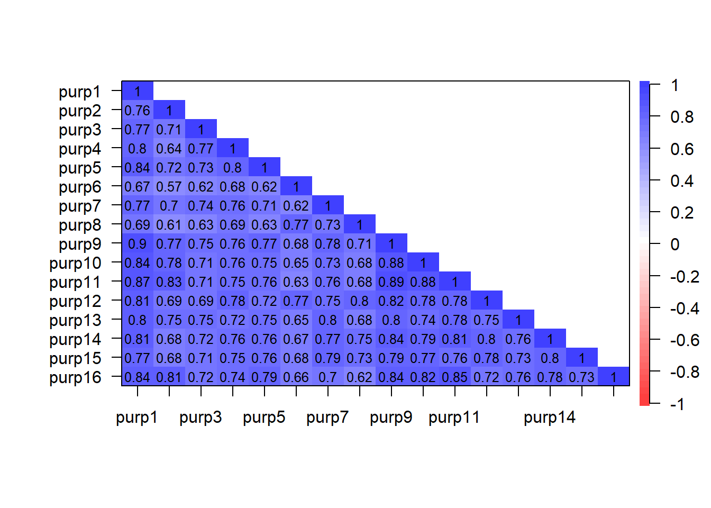
$chisq
[1] 5710.729
$p.value
[1] 0
$df
[1] 120Kaiser-Meyer-Olkin factor adequacy
Call: psych::KMO(r = pur_rho1)
Overall MSA = 0.96
MSA for each item =
purp1 purp2 purp3 purp4 purp5 purp6 purp7 purp8 purp10 purp11 purp12
0.97 0.95 0.97 0.96 0.96 0.94 0.96 0.95 0.98 0.95 0.97
purp13 purp14 purp15 purp16
0.97 0.97 0.97 0.96 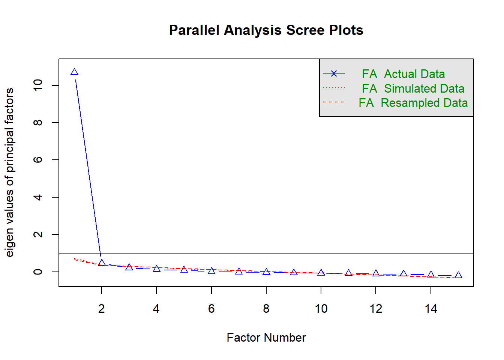
Parallel analysis suggests that the number of factors = 2 and the number of components = NA 4.2.2 Factor analysis
Factor Analysis using method = wls
Call: psych::fa(r = pur_selection1, nfactors = 1, fm = "wls", cor = "poly")
Standardized loadings (pattern matrix) based upon correlation matrix
WLS1 h2 u2 com
purp1 0.93 0.87 0.13 1
purp2 0.81 0.66 0.34 1
purp3 0.83 0.68 0.32 1
purp4 0.87 0.75 0.25 1
purp5 0.87 0.76 0.24 1
purp6 0.79 0.62 0.38 1
purp7 0.84 0.71 0.29 1
purp8 0.79 0.63 0.37 1
purp10 0.89 0.80 0.20 1
purp11 0.91 0.82 0.18 1
purp12 0.89 0.79 0.21 1
purp13 0.87 0.76 0.24 1
purp14 0.90 0.80 0.20 1
purp15 0.88 0.77 0.23 1
purp16 0.88 0.77 0.23 1
WLS1
SS loadings 11.20
Proportion Var 0.75
Mean item complexity = 1
Test of the hypothesis that 1 factor is sufficient.
The degrees of freedom for the null model are 105 and the objective function was 20.13 with Chi Square of 5458.58
The degrees of freedom for the model are 90 and the objective function was 2.77
The root mean square of the residuals (RMSR) is 0.05
The df corrected root mean square of the residuals is 0.05
The harmonic number of observations is 278 with the empirical chi square 118.53 with prob < 0.024
The total number of observations was 278 with Likelihood Chi Square = 749.51 with prob < 1.3e-104
Tucker Lewis Index of factoring reliability = 0.856
RMSEA index = 0.162 and the 90 % confidence intervals are 0.152 0.174
BIC = 243.02
Fit based upon off diagonal values = 1
Measures of factor score adequacy
WLS1
Correlation of (regression) scores with factors 0.99
Multiple R square of scores with factors 0.98
Minimum correlation of possible factor scores 0.96# Rotated loadings from Factor Analysis (oblimin-rotation)
Variable | WLS1 | Complexity | Uniqueness
-----------------------------------------
purp1 | 0.93 | 1.00 | 0.13
purp11 | 0.91 | 1.00 | 0.18
purp14 | 0.90 | 1.00 | 0.20
purp10 | 0.89 | 1.00 | 0.20
purp12 | 0.89 | 1.00 | 0.21
purp16 | 0.88 | 1.00 | 0.23
purp15 | 0.88 | 1.00 | 0.23
purp13 | 0.87 | 1.00 | 0.24
purp5 | 0.87 | 1.00 | 0.24
purp4 | 0.87 | 1.00 | 0.25
purp7 | 0.84 | 1.00 | 0.29
purp3 | 0.83 | 1.00 | 0.32
purp2 | 0.81 | 1.00 | 0.34
purp8 | 0.79 | 1.00 | 0.37
purp6 | 0.79 | 1.00 | 0.38
The unique latent factor (oblimin rotation) accounted for 74.65% of the total variance of the original data.Factor Analysis using method = wls
Call: psych::fa(r = pur_selection1, nfactors = 2, scores = "tenBerge",
fm = "wls", cor = "poly")
Standardized loadings (pattern matrix) based upon correlation matrix
WLS1 WLS2 h2 u2 com
purp1 0.90 0.06 0.90 0.095 1.0
purp2 0.95 -0.13 0.73 0.275 1.0
purp3 0.62 0.25 0.68 0.316 1.3
purp4 0.58 0.33 0.74 0.257 1.6
purp5 0.76 0.14 0.76 0.240 1.1
purp6 0.05 0.84 0.77 0.234 1.0
purp7 0.55 0.33 0.71 0.293 1.6
purp8 -0.01 0.90 0.81 0.193 1.0
purp10 0.90 0.02 0.84 0.163 1.0
purp11 1.03 -0.11 0.90 0.097 1.0
purp12 0.35 0.61 0.83 0.172 1.6
purp13 0.69 0.22 0.76 0.244 1.2
purp14 0.53 0.42 0.81 0.193 1.9
purp15 0.48 0.45 0.78 0.222 2.0
purp16 0.94 -0.05 0.82 0.180 1.0
WLS1 WLS2
SS loadings 8.18 3.65
Proportion Var 0.55 0.24
Cumulative Var 0.55 0.79
Proportion Explained 0.69 0.31
Cumulative Proportion 0.69 1.00
With factor correlations of
WLS1 WLS2
WLS1 1.00 0.79
WLS2 0.79 1.00
Mean item complexity = 1.3
Test of the hypothesis that 2 factors are sufficient.
The degrees of freedom for the null model are 105 and the objective function was 20.13 with Chi Square of 5458.58
The degrees of freedom for the model are 76 and the objective function was 1.59
The root mean square of the residuals (RMSR) is 0.03
The df corrected root mean square of the residuals is 0.03
The harmonic number of observations is 278 with the empirical chi square 40.82 with prob < 1
The total number of observations was 278 with Likelihood Chi Square = 429.15 with prob < 1.1e-50
Tucker Lewis Index of factoring reliability = 0.908
RMSEA index = 0.129 and the 90 % confidence intervals are 0.118 0.142
BIC = 1.45
Fit based upon off diagonal values = 1
Measures of factor score adequacy
WLS1 WLS2
Correlation of (regression) scores with factors 0.99 0.97
Multiple R square of scores with factors 0.98 0.93
Minimum correlation of possible factor scores 0.96 0.87# Rotated loadings from Factor Analysis (oblimin-rotation)
Variable | WLS1 | WLS2 | Complexity | Uniqueness
------------------------------------------------
purp11 | 1.03 | | 1.02 | 0.10
purp2 | 0.95 | | 1.04 | 0.27
purp16 | 0.94 | | 1.01 | 0.18
purp1 | 0.90 | | 1.01 | 0.10
purp10 | 0.90 | | 1.00 | 0.16
purp5 | 0.76 | | 1.07 | 0.24
purp13 | 0.69 | 0.22 | 1.19 | 0.24
purp3 | 0.62 | 0.25 | 1.31 | 0.32
purp4 | 0.58 | 0.33 | 1.59 | 0.26
purp7 | 0.55 | 0.33 | 1.65 | 0.29
purp14 | 0.53 | 0.42 | 1.90 | 0.19
purp15 | 0.48 | 0.45 | 1.99 | 0.22
purp8 | | 0.90 | 1.00 | 0.19
purp6 | | 0.84 | 1.01 | 0.23
purp12 | 0.35 | 0.61 | 1.60 | 0.17
The 2 latent factors (oblimin rotation) accounted for 78.84% of the total variance of the original data (WLS1 = 54.53%, WLS2 = 24.31%).In this model, I removed purp4, purp7, purp14, purp15 based on the exclusion rules outlined under Exploratory Factor Analysis: Analytic Approach
Factor 1: ????
- purp11 My work feels purposeful.
- purp16 My daily activities at work are consistent with a broader purpose.
- purp2 The work I do serves a greater purpose.
- purp1 I have discovered work that has a satisfying purpose.
- purp10 My work tasks feel purposeful.
- purp5 My work matches my professional interests.
- purp13 I pursue one or more big purposes at my work.
- purp3 I view my work as contributing to my personal growth.
Factor 2: ????
- purp8 I have clear goals at work.
- purp6 I have a good sense of what I’m trying to accomplish at work.
- purp12 I feel a sense of direction at work.
Factor Analysis using method = wls
Call: psych::fa(r = pur_selection_short, nfactors = 2, scores = "tenBerge",
fm = "wls", cor = "poly")
Standardized loadings (pattern matrix) based upon correlation matrix
WLS1 WLS2 h2 u2 com
purp1 0.90 0.06 0.90 0.096 1.0
purp2 0.93 -0.09 0.74 0.258 1.0
purp3 0.63 0.21 0.66 0.341 1.2
purp5 0.77 0.11 0.74 0.259 1.0
purp6 0.01 0.90 0.82 0.178 1.0
purp8 -0.01 0.91 0.82 0.176 1.0
purp10 0.88 0.04 0.85 0.154 1.0
purp11 1.02 -0.09 0.91 0.095 1.0
purp12 0.37 0.59 0.83 0.173 1.7
purp13 0.70 0.20 0.75 0.251 1.2
purp16 0.93 -0.03 0.82 0.178 1.0
WLS1 WLS2
SS loadings 6.35 2.49
Proportion Var 0.58 0.23
Cumulative Var 0.58 0.80
Proportion Explained 0.72 0.28
Cumulative Proportion 0.72 1.00
With factor correlations of
WLS1 WLS2
WLS1 1.00 0.78
WLS2 0.78 1.00
Mean item complexity = 1.1
Test of the hypothesis that 2 factors are sufficient.
The degrees of freedom for the null model are 55 and the objective function was 13.85 with Chi Square of 3773.75
The degrees of freedom for the model are 34 and the objective function was 0.6
The root mean square of the residuals (RMSR) is 0.02
The df corrected root mean square of the residuals is 0.02
The harmonic number of observations is 278 with the empirical chi square 11.71 with prob < 1
The total number of observations was 278 with Likelihood Chi Square = 161.38 with prob < 1.7e-18
Tucker Lewis Index of factoring reliability = 0.944
RMSEA index = 0.116 and the 90 % confidence intervals are 0.099 0.135
BIC = -29.96
Fit based upon off diagonal values = 1
Measures of factor score adequacy
WLS1 WLS2
Correlation of (regression) scores with factors 0.99 0.96
Multiple R square of scores with factors 0.98 0.93
Minimum correlation of possible factor scores 0.95 0.86# Rotated loadings from Factor Analysis (oblimin-rotation)
Variable | WLS1 | WLS2 | Complexity | Uniqueness
------------------------------------------------
purp11 | 1.02 | | 1.01 | 0.09
purp2 | 0.93 | | 1.02 | 0.26
purp16 | 0.93 | | 1.00 | 0.18
purp1 | 0.90 | | 1.01 | 0.10
purp10 | 0.88 | | 1.01 | 0.15
purp5 | 0.77 | | 1.04 | 0.26
purp13 | 0.70 | 0.20 | 1.17 | 0.25
purp3 | 0.63 | 0.21 | 1.23 | 0.34
purp8 | | 0.91 | 1.00 | 0.18
purp6 | | 0.90 | 1.00 | 0.18
purp12 | 0.37 | 0.59 | 1.67 | 0.17
The 2 latent factors (oblimin rotation) accounted for 80.36% of the total variance of the original data (WLS1 = 57.73%, WLS2 = 22.63%).4.3 Significance
The final suggested model:
Factor 1: Personal significance
- sig12 My job activities are personally important to me.
- sig11 The work I do is very important to me.
- sig10 The work I do is connected to what I think is important in life.
- sig16 My work feels highly personally significant to me.
- sig13 My work feels very valuable to me.
- sig9 I work for a cause greater than my own paycheck.
- sig15 Every day I experience the sense that my work is worth doing.
- sig7 The work I do on my job is part of the legacy I will leave on this earth after I am gone.
- sig17 I see my work as highly valuable.
Factor 2: Mattering to the wider world
- sig3 My job has a large impact on the people outside of the organization.
- sig4 The work performed on my job has a significant impact on people outside the organization.
- sig1 The results of my work are likely to significantly affect the lives of other people.
- sig5 My work really makes no difference to the world.
Factor 3: Organisational worth
- socwor1 I feel valued as a person at work.
- socwor5 I feel that people at my organization really value me.
- socwor2 I feel appreciated as an individual at work.
- socwor6 I feel that people at my organization think my work is valuable.
- socwor4 I feel important to my organization.
4.3.1 Pre-analysis
sig11, sig12, sig13 and sig16 are highly correlated with one another and some of the other items (>.90)
sig14 and sig2 were also highly correlated so I removed sig2 as this seemed a bit wordy (My job is very significant and important in the broader scheme of things)
sig4 and sig3 were also highly correlated so I removed sig4 (The work performed on my job has a significant impact on people outside the organization) as it just seemed like a wordier version of sig3
socwor2 and socwor5 are highly correlated with one another and some of the other items (>.90)
sig1 sig2 sig3 sig4 sig5 sig6 sig7 sig8 sig9 sig10 sig11 sig12
sig1 1.00 0.84 0.84 0.82 -0.68 0.85 0.66 0.79 0.76 0.74 0.74 0.67
sig2 0.84 1.00 0.80 0.76 -0.67 0.87 0.67 0.80 0.78 0.81 0.80 0.75
sig3 0.84 0.80 1.00 0.92 -0.65 0.80 0.61 0.76 0.72 0.66 0.67 0.62
sig4 0.82 0.76 0.92 1.00 -0.60 0.77 0.61 0.74 0.68 0.63 0.63 0.59
sig5 -0.68 -0.67 -0.65 -0.60 1.00 -0.67 -0.48 -0.63 -0.61 -0.56 -0.60 -0.55
sig6 0.85 0.87 0.80 0.77 -0.67 1.00 0.72 0.82 0.82 0.81 0.79 0.75
sig7 0.66 0.67 0.61 0.61 -0.48 0.72 1.00 0.70 0.74 0.76 0.74 0.72
sig8 0.79 0.80 0.76 0.74 -0.63 0.82 0.70 1.00 0.84 0.80 0.76 0.73
sig9 0.76 0.78 0.72 0.68 -0.61 0.82 0.74 0.84 1.00 0.85 0.80 0.77
sig10 0.74 0.81 0.66 0.63 -0.56 0.81 0.76 0.80 0.85 1.00 0.86 0.84
sig11 0.74 0.80 0.67 0.63 -0.60 0.79 0.74 0.76 0.80 0.86 1.00 0.93
sig12 0.67 0.75 0.62 0.59 -0.55 0.75 0.72 0.73 0.77 0.84 0.93 1.00
sig13 0.73 0.81 0.68 0.65 -0.60 0.79 0.73 0.79 0.79 0.83 0.92 0.91
sig14 0.81 0.90 0.78 0.74 -0.66 0.85 0.73 0.80 0.80 0.82 0.85 0.81
sig15 0.71 0.78 0.66 0.64 -0.58 0.77 0.71 0.77 0.75 0.78 0.87 0.83
sig16 0.69 0.77 0.66 0.64 -0.54 0.79 0.76 0.77 0.78 0.84 0.90 0.90
sig17 0.81 0.85 0.73 0.70 -0.64 0.85 0.74 0.79 0.80 0.81 0.86 0.82
socwor1 0.48 0.55 0.45 0.43 -0.40 0.55 0.52 0.52 0.51 0.54 0.66 0.62
socwor2 0.48 0.54 0.46 0.42 -0.41 0.54 0.52 0.52 0.52 0.54 0.64 0.61
socwor3 0.76 0.77 0.74 0.70 -0.62 0.79 0.64 0.74 0.72 0.73 0.72 0.69
socwor4 0.47 0.54 0.45 0.42 -0.40 0.55 0.55 0.57 0.53 0.57 0.65 0.64
socwor5 0.47 0.53 0.43 0.42 -0.37 0.52 0.50 0.53 0.50 0.55 0.63 0.60
socwor6 0.47 0.50 0.45 0.42 -0.37 0.52 0.46 0.53 0.50 0.47 0.59 0.57
sig13 sig14 sig15 sig16 sig17 socwor1 socwor2 socwor3 socwor4 socwor5
sig1 0.73 0.81 0.71 0.69 0.81 0.48 0.48 0.76 0.47 0.47
sig2 0.81 0.90 0.78 0.77 0.85 0.55 0.54 0.77 0.54 0.53
sig3 0.68 0.78 0.66 0.66 0.73 0.45 0.46 0.74 0.45 0.43
sig4 0.65 0.74 0.64 0.64 0.70 0.43 0.42 0.70 0.42 0.42
sig5 -0.60 -0.66 -0.58 -0.54 -0.64 -0.40 -0.41 -0.62 -0.40 -0.37
sig6 0.79 0.85 0.77 0.79 0.85 0.55 0.54 0.79 0.55 0.52
sig7 0.73 0.73 0.71 0.76 0.74 0.52 0.52 0.64 0.55 0.50
sig8 0.79 0.80 0.77 0.77 0.79 0.52 0.52 0.74 0.57 0.53
sig9 0.79 0.80 0.75 0.78 0.80 0.51 0.52 0.72 0.53 0.50
sig10 0.83 0.82 0.78 0.84 0.81 0.54 0.54 0.73 0.57 0.55
sig11 0.92 0.85 0.87 0.90 0.86 0.66 0.64 0.72 0.65 0.63
sig12 0.91 0.81 0.83 0.90 0.82 0.62 0.61 0.69 0.64 0.60
sig13 1.00 0.87 0.86 0.90 0.89 0.67 0.65 0.73 0.67 0.66
sig14 0.87 1.00 0.81 0.82 0.91 0.59 0.58 0.76 0.60 0.58
sig15 0.86 0.81 1.00 0.85 0.81 0.65 0.65 0.70 0.64 0.65
sig16 0.90 0.82 0.85 1.00 0.84 0.63 0.63 0.71 0.63 0.62
sig17 0.89 0.91 0.81 0.84 1.00 0.65 0.64 0.77 0.64 0.64
socwor1 0.67 0.59 0.65 0.63 0.65 1.00 0.95 0.65 0.89 0.94
socwor2 0.65 0.58 0.65 0.63 0.64 0.95 1.00 0.64 0.90 0.93
socwor3 0.73 0.76 0.70 0.71 0.77 0.65 0.64 1.00 0.65 0.66
socwor4 0.67 0.60 0.64 0.63 0.64 0.89 0.90 0.65 1.00 0.91
socwor5 0.66 0.58 0.65 0.62 0.64 0.94 0.93 0.66 0.91 1.00
socwor6 0.60 0.55 0.61 0.57 0.59 0.88 0.86 0.63 0.84 0.87
socwor6
sig1 0.47
sig2 0.50
sig3 0.45
sig4 0.42
sig5 -0.37
sig6 0.52
sig7 0.46
sig8 0.53
sig9 0.50
sig10 0.47
sig11 0.59
sig12 0.57
sig13 0.60
sig14 0.55
sig15 0.61
sig16 0.57
sig17 0.59
socwor1 0.88
socwor2 0.86
socwor3 0.63
socwor4 0.84
socwor5 0.87
socwor6 1.00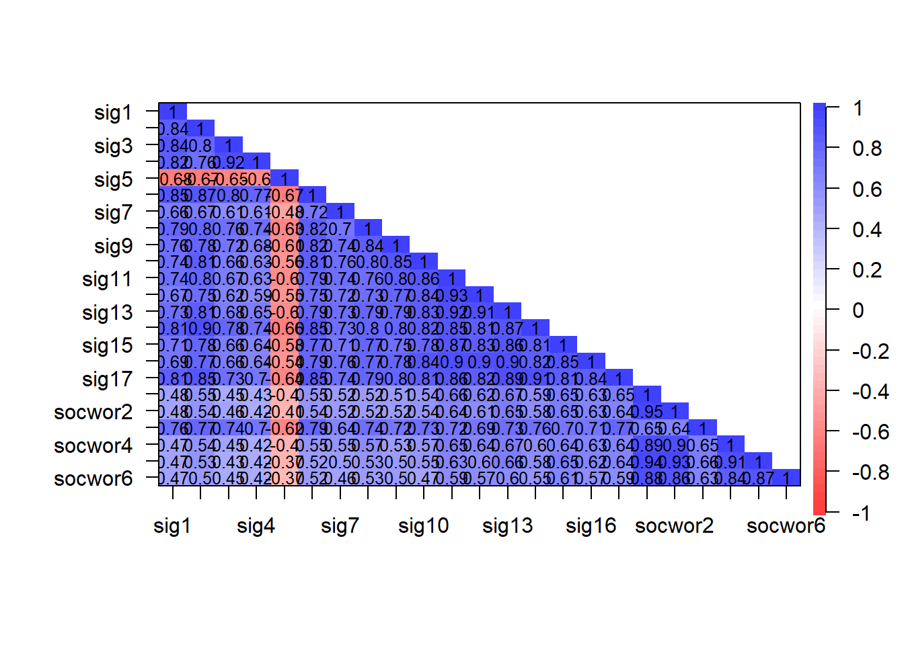
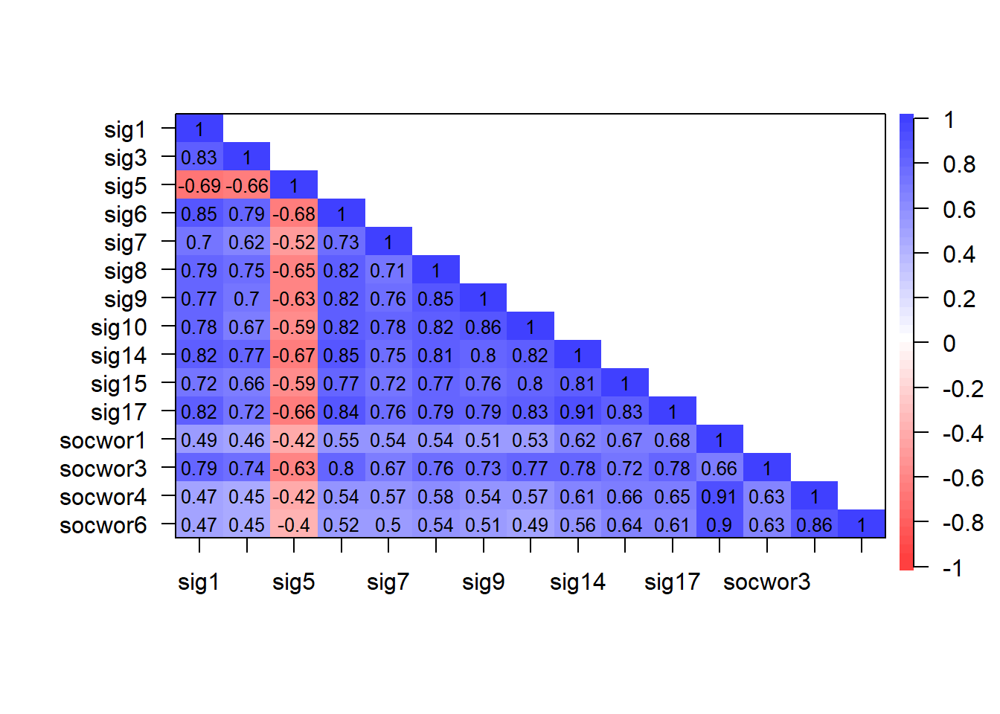
$chisq
[1] 5349.14
$p.value
[1] 0
$df
[1] 105Kaiser-Meyer-Olkin factor adequacy
Call: psych::KMO(r = sig_rho1)
Overall MSA = 0.96
MSA for each item =
sig1 sig3 sig5 sig6 sig7 sig8 sig9 sig10 sig14 sig15
0.96 0.95 0.98 0.98 0.98 0.97 0.96 0.94 0.96 0.98
sig17 socwor1 socwor3 socwor4 socwor6
0.95 0.88 0.97 0.91 0.92 $chisq
[1] 5349.14
$p.value
[1] 0
$df
[1] 105Kaiser-Meyer-Olkin factor adequacy
Call: psych::KMO(r = sig_rho1)
Overall MSA = 0.96
MSA for each item =
sig1 sig3 sig5 sig6 sig7 sig8 sig9 sig10 sig14 sig15
0.96 0.95 0.98 0.98 0.98 0.97 0.96 0.94 0.96 0.98
sig17 socwor1 socwor3 socwor4 socwor6
0.95 0.88 0.97 0.91 0.92 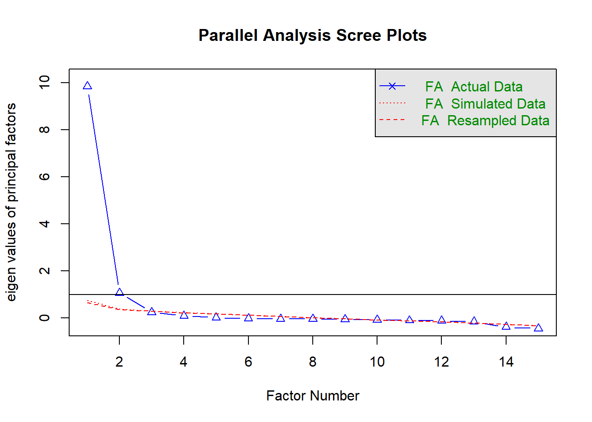
Parallel analysis suggests that the number of factors = 2 and the number of components = NA 4.3.2 Factor analysis
Factor Analysis using method = wls
Call: psych::fa(r = sig_selection1, nfactors = 2, scores = "tenBerge",
fm = "wls", cor = "poly")
Standardized loadings (pattern matrix) based upon correlation matrix
WLS1 WLS2 h2 u2 com
sig1 0.98 -0.13 0.82 0.18 1.0
sig3 0.89 -0.10 0.69 0.31 1.0
sig5 -0.76 0.05 0.52 0.48 1.0
sig6 0.95 -0.05 0.86 0.14 1.0
sig7 0.74 0.09 0.65 0.35 1.0
sig8 0.88 0.02 0.80 0.20 1.0
sig9 0.91 -0.03 0.79 0.21 1.0
sig10 0.91 -0.01 0.81 0.19 1.0
sig14 0.89 0.07 0.86 0.14 1.0
sig15 0.69 0.26 0.76 0.24 1.3
sig17 0.82 0.17 0.87 0.13 1.1
socwor1 0.02 0.95 0.93 0.07 1.0
socwor3 0.72 0.20 0.75 0.25 1.2
socwor4 0.04 0.92 0.89 0.11 1.0
socwor6 0.00 0.92 0.85 0.15 1.0
WLS1 WLS2
SS loadings 8.86 2.99
Proportion Var 0.59 0.20
Cumulative Var 0.59 0.79
Proportion Explained 0.75 0.25
Cumulative Proportion 0.75 1.00
With factor correlations of
WLS1 WLS2
WLS1 1.00 0.63
WLS2 0.63 1.00
Mean item complexity = 1
Test of the hypothesis that 2 factors are sufficient.
The degrees of freedom for the null model are 105 and the objective function was 19.73 with Chi Square of 5349.14
The degrees of freedom for the model are 76 and the objective function was 1.31
The root mean square of the residuals (RMSR) is 0.03
The df corrected root mean square of the residuals is 0.03
The harmonic number of observations is 278 with the empirical chi square 38.38 with prob < 1
The total number of observations was 278 with Likelihood Chi Square = 352.97 with prob < 2.8e-37
Tucker Lewis Index of factoring reliability = 0.927
RMSEA index = 0.114 and the 90 % confidence intervals are 0.103 0.127
BIC = -74.73
Fit based upon off diagonal values = 1
Measures of factor score adequacy
WLS1 WLS2
Correlation of (regression) scores with factors 0.99 0.98
Multiple R square of scores with factors 0.98 0.97
Minimum correlation of possible factor scores 0.96 0.93# Rotated loadings from Factor Analysis (oblimin-rotation)
Variable | WLS1 | WLS2 | Complexity | Uniqueness
-------------------------------------------------
sig1 | 0.98 | | 1.04 | 0.18
sig6 | 0.95 | | 1.00 | 0.14
sig10 | 0.91 | | 1.00 | 0.19
sig9 | 0.91 | | 1.00 | 0.21
sig3 | 0.89 | | 1.02 | 0.31
sig14 | 0.89 | | 1.01 | 0.14
sig8 | 0.88 | | 1.00 | 0.20
sig17 | 0.82 | | 1.09 | 0.13
sig5 | -0.76 | | 1.01 | 0.48
sig7 | 0.74 | | 1.03 | 0.35
socwor3 | 0.72 | 0.20 | 1.16 | 0.25
sig15 | 0.69 | 0.26 | 1.27 | 0.24
socwor1 | | 0.95 | 1.00 | 0.07
socwor6 | | 0.92 | 1.00 | 0.15
socwor4 | | 0.92 | 1.00 | 0.11
The 2 latent factors (oblimin rotation) accounted for 79.01% of the total variance of the original data (WLS1 = 59.05%, WLS2 = 19.95%).In this model, I removed sig14, sig8, sig6, and sig2 based on the exclusion rules outlined under Exploratory Factor Analysis: Analytic Approach.
Factor Analysis using method = wls
Call: psych::fa(r = sig_selection_short, nfactors = 3, scores = "tenBerge",
fm = "wls", cor = "poly")
Standardized loadings (pattern matrix) based upon correlation matrix
WLS1 WLS2 WLS3 h2 u2 com
sig1 0.23 -0.03 0.76 0.86 0.139 1.2
sig3 -0.01 0.03 0.90 0.82 0.182 1.0
sig4 -0.05 0.03 0.90 0.76 0.237 1.0
sig5 -0.10 -0.04 -0.65 0.56 0.438 1.1
sig7 0.72 0.01 0.13 0.69 0.314 1.1
sig9 0.74 -0.08 0.23 0.79 0.215 1.2
sig10 0.95 -0.12 0.07 0.86 0.144 1.0
sig11 0.95 0.04 -0.02 0.92 0.078 1.0
sig12 1.00 0.02 -0.10 0.89 0.112 1.0
sig13 0.88 0.10 0.02 0.92 0.078 1.0
sig15 0.75 0.16 0.05 0.81 0.190 1.1
sig16 0.95 0.03 -0.03 0.91 0.095 1.0
sig17 0.62 0.14 0.25 0.86 0.138 1.4
socwor1 0.00 0.95 0.03 0.92 0.081 1.0
socwor2 0.03 0.92 0.02 0.90 0.103 1.0
socwor3 0.20 0.28 0.52 0.77 0.230 1.9
socwor4 0.13 0.89 -0.07 0.89 0.108 1.1
socwor5 0.04 0.95 -0.03 0.91 0.088 1.0
socwor6 -0.10 0.94 0.09 0.84 0.155 1.0
WLS1 WLS2 WLS3
SS loadings 7.38 4.82 3.67
Proportion Var 0.39 0.25 0.19
Cumulative Var 0.39 0.64 0.84
Proportion Explained 0.46 0.30 0.23
Cumulative Proportion 0.46 0.77 1.00
With factor correlations of
WLS1 WLS2 WLS3
WLS1 1.00 0.68 0.79
WLS2 0.68 1.00 0.49
WLS3 0.79 0.49 1.00
Mean item complexity = 1.1
Test of the hypothesis that 3 factors are sufficient.
The degrees of freedom for the null model are 171 and the objective function was 32.08 with Chi Square of 8655.97
The degrees of freedom for the model are 117 and the objective function was 3
The root mean square of the residuals (RMSR) is 0.02
The df corrected root mean square of the residuals is 0.02
The harmonic number of observations is 278 with the empirical chi square 33.37 with prob < 1
The total number of observations was 278 with Likelihood Chi Square = 803.23 with prob < 7.6e-103
Tucker Lewis Index of factoring reliability = 0.881
RMSEA index = 0.145 and the 90 % confidence intervals are 0.136 0.155
BIC = 144.8
Fit based upon off diagonal values = 1
Measures of factor score adequacy
WLS1 WLS2 WLS3
Correlation of (regression) scores with factors 0.99 0.98 0.97
Multiple R square of scores with factors 0.98 0.96 0.93
Minimum correlation of possible factor scores 0.96 0.92 0.87# Rotated loadings from Factor Analysis (oblimin-rotation)
Variable | WLS1 | WLS2 | WLS3 | Complexity | Uniqueness
--------------------------------------------------------
sig12 | 1.00 | | | 1.02 | 0.11
sig16 | 0.95 | | | 1.00 | 0.09
sig11 | 0.95 | | | 1.01 | 0.08
sig10 | 0.95 | | | 1.04 | 0.14
sig13 | 0.88 | | | 1.03 | 0.08
sig15 | 0.75 | | | 1.10 | 0.19
sig9 | 0.74 | | 0.23 | 1.22 | 0.21
sig7 | 0.72 | | | 1.06 | 0.31
sig17 | 0.62 | | 0.25 | 1.42 | 0.14
socwor1 | | 0.95 | | 1.00 | 0.08
socwor5 | | 0.95 | | 1.01 | 0.09
socwor6 | | 0.94 | | 1.04 | 0.16
socwor2 | | 0.92 | | 1.00 | 0.10
socwor4 | | 0.89 | | 1.05 | 0.11
sig3 | | | 0.90 | 1.00 | 0.18
sig4 | | | 0.90 | 1.01 | 0.24
sig1 | 0.23 | | 0.76 | 1.18 | 0.14
sig5 | | | -0.65 | 1.05 | 0.44
socwor3 | 0.20 | 0.28 | 0.52 | 1.88 | 0.23
The 3 latent factors (oblimin rotation) accounted for 83.55% of the total variance of the original data (WLS1 = 38.84%, WLS2 = 25.38%, WLS3 = 19.33%).4.4 Global meaning
Final suggested model
Factor 1: Global meaningful work
- gmw1 I have found a meaningful career.
- gmw2 I have a good sense of what makes my job meaningful.
- gmw3 The work I do is meaningful to me.
- gmw4 My job activities are personally meaningful to me.
- gmw5 The work I do on this job is meaningful to me.
- gmw6 I understand what gives my work personal meaning.
- gmw7 My work feels meaningful.
- gmw8 I believe my work is meaningful
4.4.1 Pre-analysis
gmw1 gmw2 gmw3 gmw4 gmw5 gmw6 gmw7 gmw8
gmw1 1.00 0.84 0.90 0.91 0.91 0.86 0.88 0.89
gmw2 0.84 1.00 0.88 0.88 0.88 0.96 0.87 0.90
gmw3 0.90 0.88 1.00 0.96 0.97 0.89 0.93 0.95
gmw4 0.91 0.88 0.96 1.00 0.96 0.87 0.93 0.91
gmw5 0.91 0.88 0.97 0.96 1.00 0.89 0.94 0.91
gmw6 0.86 0.96 0.89 0.87 0.89 1.00 0.88 0.88
gmw7 0.88 0.87 0.93 0.93 0.94 0.88 1.00 0.95
gmw8 0.89 0.90 0.95 0.91 0.91 0.88 0.95 1.00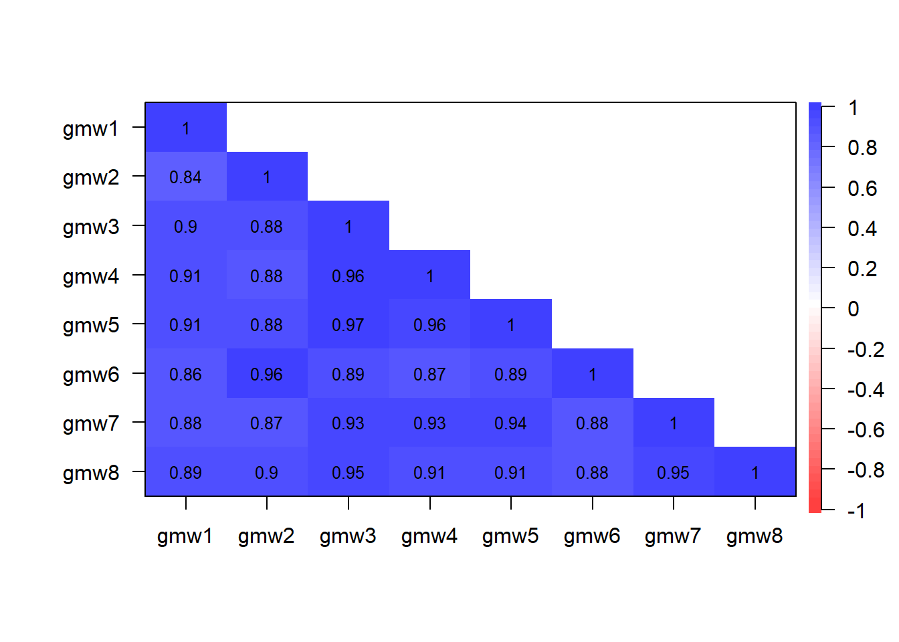
$chisq
[1] 5176.376
$p.value
[1] 0
$df
[1] 28Kaiser-Meyer-Olkin factor adequacy
Call: psych::KMO(r = gmw_rho)
Overall MSA = 0.58
MSA for each item =
gmw1 gmw2 gmw3 gmw4 gmw5 gmw6 gmw7 gmw8
0.61 0.56 0.56 0.63 0.61 0.58 0.57 0.55 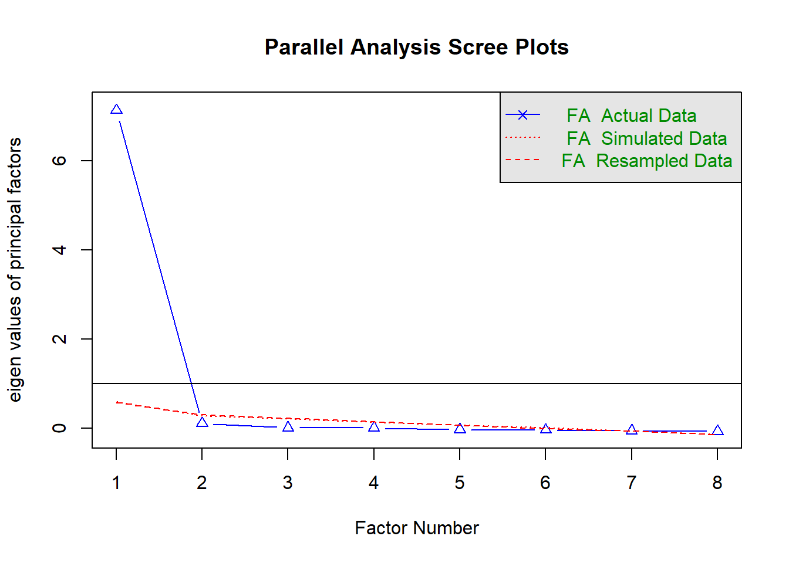
Parallel analysis suggests that the number of factors = 1 and the number of components = NA 4.4.2 Factor analysis
4.4.2.1 1-factor model
Factor Analysis using method = wls
Call: psych::fa(r = gmw_selection, nfactors = 1, fm = "wls", cor = "poly")
Standardized loadings (pattern matrix) based upon correlation matrix
WLS1 h2 u2 com
gmw1 0.94 0.88 0.119 1
gmw2 0.94 0.89 0.112 1
gmw3 0.97 0.94 0.061 1
gmw4 0.96 0.93 0.074 1
gmw5 0.97 0.93 0.066 1
gmw6 0.93 0.86 0.137 1
gmw7 0.96 0.92 0.083 1
gmw8 0.97 0.93 0.067 1
WLS1
SS loadings 7.28
Proportion Var 0.91
Mean item complexity = 1
Test of the hypothesis that 1 factor is sufficient.
The degrees of freedom for the null model are 28 and the objective function was 17.61 with Chi Square of 4815.16
The degrees of freedom for the model are 20 and the objective function was 1.39
The root mean square of the residuals (RMSR) is 0.02
The df corrected root mean square of the residuals is 0.03
The harmonic number of observations is 278 with the empirical chi square 7.15 with prob < 1
The total number of observations was 278 with Likelihood Chi Square = 379.72 with prob < 3.3e-68
Tucker Lewis Index of factoring reliability = 0.895
RMSEA index = 0.254 and the 90 % confidence intervals are 0.233 0.278
BIC = 267.17
Fit based upon off diagonal values = 1
Measures of factor score adequacy
WLS1
Correlation of (regression) scores with factors 0.99
Multiple R square of scores with factors 0.98
Minimum correlation of possible factor scores 0.96# Rotated loadings from Factor Analysis (oblimin-rotation)
Variable | WLS1 | Complexity | Uniqueness
-----------------------------------------
gmw3 | 0.97 | 1.00 | 0.06
gmw5 | 0.97 | 1.00 | 0.07
gmw8 | 0.97 | 1.00 | 0.07
gmw4 | 0.96 | 1.00 | 0.07
gmw7 | 0.96 | 1.00 | 0.08
gmw2 | 0.94 | 1.00 | 0.11
gmw1 | 0.94 | 1.00 | 0.12
gmw6 | 0.93 | 1.00 | 0.14
The unique latent factor (oblimin rotation) accounted for 91.01% of the total variance of the original data.4.4.2.2
4.5 Self-realization and personal growth
The final suggested model:
Factor 1: Personal growth
- pg1 I feel that I am growing as a person through my work.
- pg2 My work gives me an opportunity to become a better person.
- pg5 I feel that I am evolving as a person through my work.
- pg4 I am a better person because of my work.
- pg3 I am constantly learning and developing through my work.
Factor 2: Self-realization
- sr5 At work, I am able to be totally myself.
- sr6 At work, I am able to be just the person I really am.
- sr7 I am able to express myself freely at work.
- sr4 At work, I feel divorced from myself.
4.5.1 Pre-analysis
sr1 sr2 sr3 sr4 sr5 sr6 sr7 sr8 pg1 pg2 pg3 pg4
sr1 1.00 0.78 0.81 -0.69 0.67 0.71 0.69 0.78 0.72 0.67 0.71 0.66
sr2 0.78 1.00 0.78 -0.56 0.67 0.67 0.68 0.76 0.72 0.70 0.70 0.70
sr3 0.81 0.78 1.00 -0.68 0.78 0.79 0.79 0.83 0.76 0.73 0.72 0.73
sr4 -0.69 -0.56 -0.68 1.00 -0.72 -0.72 -0.67 -0.66 -0.58 -0.52 -0.53 -0.54
sr5 0.67 0.67 0.78 -0.72 1.00 0.92 0.90 0.75 0.61 0.56 0.55 0.60
sr6 0.71 0.67 0.79 -0.72 0.92 1.00 0.91 0.76 0.63 0.59 0.58 0.62
sr7 0.69 0.68 0.79 -0.67 0.90 0.91 1.00 0.77 0.62 0.58 0.59 0.60
sr8 0.78 0.76 0.83 -0.66 0.75 0.76 0.77 1.00 0.82 0.77 0.69 0.76
pg1 0.72 0.72 0.76 -0.58 0.61 0.63 0.62 0.82 1.00 0.90 0.81 0.89
pg2 0.67 0.70 0.73 -0.52 0.56 0.59 0.58 0.77 0.90 1.00 0.79 0.90
pg3 0.71 0.70 0.72 -0.53 0.55 0.58 0.59 0.69 0.81 0.79 1.00 0.74
pg4 0.66 0.70 0.73 -0.54 0.60 0.62 0.60 0.76 0.89 0.90 0.74 1.00
pg5 0.70 0.71 0.76 -0.53 0.62 0.63 0.64 0.80 0.94 0.88 0.83 0.86
pg5
sr1 0.70
sr2 0.71
sr3 0.76
sr4 -0.53
sr5 0.62
sr6 0.63
sr7 0.64
sr8 0.80
pg1 0.94
pg2 0.88
pg3 0.83
pg4 0.86
pg5 1.00
$chisq
[1] 4888.608
$p.value
[1] 0
$df
[1] 78Kaiser-Meyer-Olkin factor adequacy
Call: psych::KMO(r = srpg_rho)
Overall MSA = 0.95
MSA for each item =
sr1 sr2 sr3 sr4 sr5 sr6 sr7 sr8 pg1 pg2 pg3 pg4 pg5
0.95 0.96 0.98 0.94 0.92 0.92 0.94 0.97 0.92 0.95 0.96 0.95 0.92 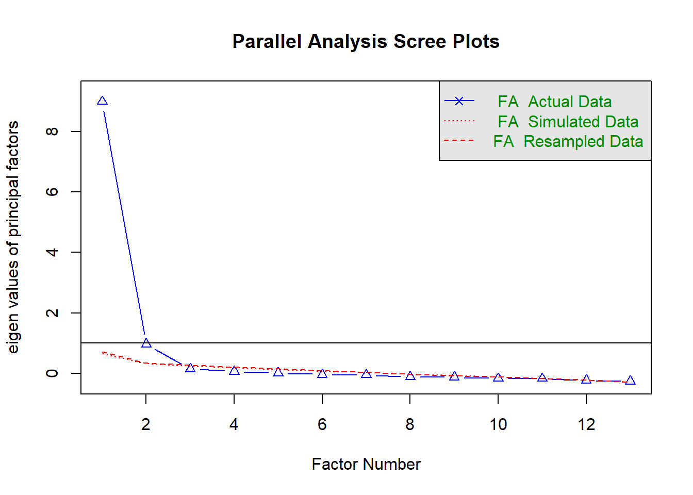
Parallel analysis suggests that the number of factors = 2 and the number of components = NA 4.5.2 Factor analysis
Factor Analysis using method = wls
Call: psych::fa(r = srpg_selection, nfactors = 2, scores = "tenBerge",
fm = "wls", cor = "poly")
Standardized loadings (pattern matrix) based upon correlation matrix
WLS1 WLS2 h2 u2 com
sr1 0.44 0.48 0.73 0.270 2.0
sr2 0.51 0.39 0.71 0.295 1.9
sr3 0.40 0.60 0.88 0.120 1.7
sr4 -0.04 -0.75 0.61 0.387 1.0
sr5 -0.05 0.96 0.86 0.142 1.0
sr6 -0.03 0.94 0.85 0.148 1.0
sr7 -0.02 0.93 0.84 0.164 1.0
sr8 0.53 0.46 0.83 0.166 2.0
pg1 0.97 -0.02 0.92 0.078 1.0
pg2 0.98 -0.08 0.86 0.137 1.0
pg3 0.83 0.04 0.74 0.262 1.0
pg4 0.92 0.00 0.86 0.142 1.0
pg5 0.92 0.03 0.88 0.123 1.0
WLS1 WLS2
SS loadings 5.78 4.78
Proportion Var 0.44 0.37
Cumulative Var 0.44 0.81
Proportion Explained 0.55 0.45
Cumulative Proportion 0.55 1.00
With factor correlations of
WLS1 WLS2
WLS1 1.00 0.73
WLS2 0.73 1.00
Mean item complexity = 1.3
Test of the hypothesis that 2 factors are sufficient.
The degrees of freedom for the null model are 78 and the objective function was 18.85 with Chi Square of 5124.5
The degrees of freedom for the model are 53 and the objective function was 1.48
The root mean square of the residuals (RMSR) is 0.03
The df corrected root mean square of the residuals is 0.03
The harmonic number of observations is 278 with the empirical chi square 31.21 with prob < 0.99
The total number of observations was 278 with Likelihood Chi Square = 400.11 with prob < 9.1e-55
Tucker Lewis Index of factoring reliability = 0.898
RMSEA index = 0.153 and the 90 % confidence intervals are 0.14 0.168
BIC = 101.85
Fit based upon off diagonal values = 1
Measures of factor score adequacy
WLS1 WLS2
Correlation of (regression) scores with factors 0.98 0.98
Multiple R square of scores with factors 0.97 0.96
Minimum correlation of possible factor scores 0.94 0.91# Rotated loadings from Factor Analysis (oblimin-rotation)
Variable | WLS1 | WLS2 | Complexity | Uniqueness
-------------------------------------------------
pg2 | 0.98 | | 1.01 | 0.14
pg1 | 0.97 | | 1.00 | 0.08
pg4 | 0.92 | | 1.00 | 0.14
pg5 | 0.92 | | 1.00 | 0.12
pg3 | 0.83 | | 1.01 | 0.26
sr8 | 0.53 | 0.46 | 1.96 | 0.17
sr2 | 0.51 | 0.39 | 1.88 | 0.29
sr5 | | 0.96 | 1.00 | 0.14
sr6 | | 0.94 | 1.00 | 0.15
sr7 | | 0.93 | 1.00 | 0.16
sr4 | | -0.75 | 1.01 | 0.39
sr3 | 0.40 | 0.60 | 1.74 | 0.12
sr1 | 0.44 | 0.48 | 1.99 | 0.27
The 2 latent factors (oblimin rotation) accounted for 81.30% of the total variance of the original data (WLS1 = 44.49%, WLS2 = 36.81%).In this model, I removed sr8, sr2, sr3, and sr1 based on the exclusion rules outlined under Exploratory Factor Analysis: Analytic Approach.
Factor Analysis using method = wls
Call: psych::fa(r = srpg_selection_short, nfactors = 2, scores = "tenBerge",
fm = "wls", cor = "poly")
Standardized loadings (pattern matrix) based upon correlation matrix
WLS1 WLS2 h2 u2 com
sr4 -0.14 -0.63 0.54 0.459 1.1
sr5 -0.02 0.97 0.91 0.087 1.0
sr6 -0.01 0.97 0.93 0.075 1.0
sr7 0.01 0.93 0.88 0.120 1.0
pg1 1.00 -0.03 0.96 0.037 1.0
pg2 0.97 -0.05 0.88 0.124 1.0
pg3 0.80 0.07 0.73 0.270 1.0
pg4 0.90 0.03 0.86 0.145 1.0
pg5 0.93 0.03 0.90 0.097 1.0
WLS1 WLS2
SS loadings 4.36 3.23
Proportion Var 0.48 0.36
Cumulative Var 0.48 0.84
Proportion Explained 0.57 0.43
Cumulative Proportion 0.57 1.00
With factor correlations of
WLS1 WLS2
WLS1 1.00 0.69
WLS2 0.69 1.00
Mean item complexity = 1
Test of the hypothesis that 2 factors are sufficient.
The degrees of freedom for the null model are 36 and the objective function was 12.48 with Chi Square of 3408.37
The degrees of freedom for the model are 19 and the objective function was 0.43
The root mean square of the residuals (RMSR) is 0.02
The df corrected root mean square of the residuals is 0.02
The harmonic number of observations is 278 with the empirical chi square 5.21 with prob < 1
The total number of observations was 278 with Likelihood Chi Square = 117.21 with prob < 3.7e-16
Tucker Lewis Index of factoring reliability = 0.945
RMSEA index = 0.136 and the 90 % confidence intervals are 0.113 0.161
BIC = 10.29
Fit based upon off diagonal values = 1
Measures of factor score adequacy
WLS1 WLS2
Correlation of (regression) scores with factors 0.99 0.99
Multiple R square of scores with factors 0.98 0.97
Minimum correlation of possible factor scores 0.96 0.94# Rotated loadings from Factor Analysis (oblimin-rotation)
Variable | WLS1 | WLS2 | Complexity | Uniqueness
-------------------------------------------------
pg1 | 1.00 | | 1.00 | 0.04
pg2 | 0.97 | | 1.01 | 0.12
pg5 | 0.93 | | 1.00 | 0.10
pg4 | 0.90 | | 1.00 | 0.14
pg3 | 0.80 | | 1.02 | 0.27
sr6 | | 0.97 | 1.00 | 0.07
sr5 | | 0.97 | 1.00 | 0.09
sr7 | | 0.93 | 1.00 | 0.12
sr4 | | -0.63 | 1.09 | 0.46
The 2 latent factors (oblimin rotation) accounted for 84.31% of the total variance of the original data (WLS1 = 48.39%, WLS2 = 35.92%).